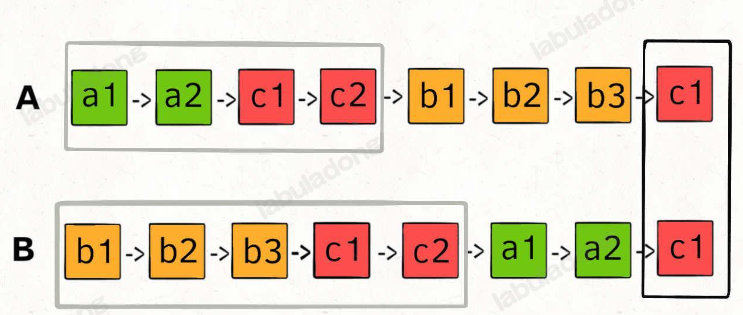
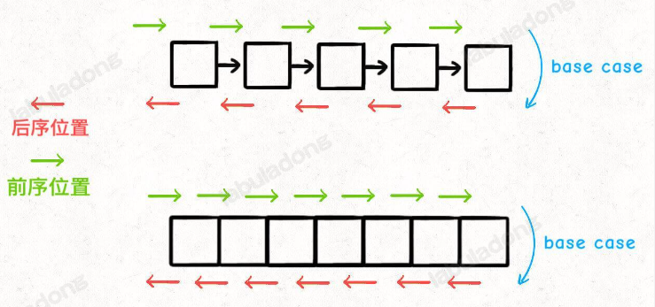
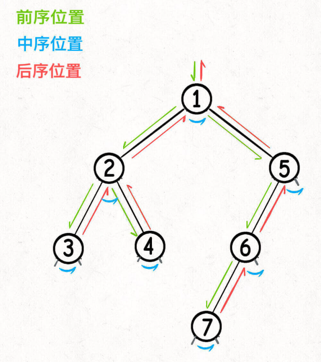
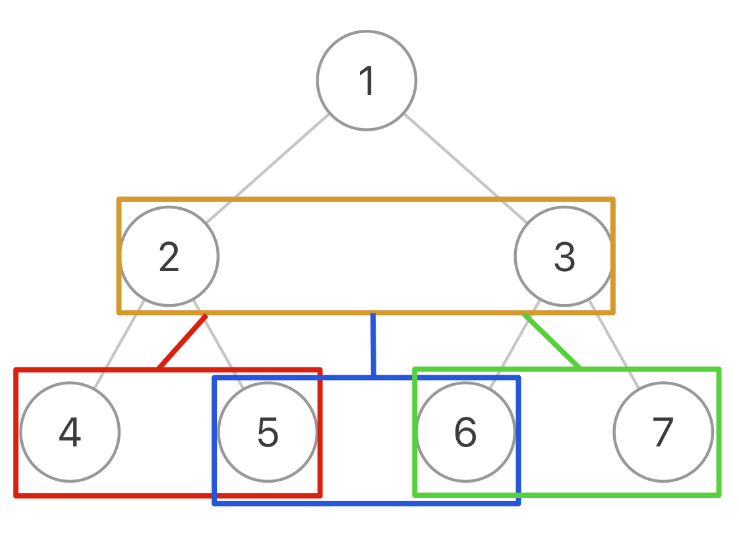

刷题的框架思维
所有的题目的数据结构都只有两种：
- 数组 （顺序存储）
- 链表（链式存储）
刷题的顺序应该是：先链表、再二叉树，再是其他的算法。
双指针：链表题
这里的指针，指的是真的指针 (
*p)
leetcode 21: 合并两个链表
遍历推进dummy *p即可，顺手推进p1, p2两个指针。
在这里p是新建的指针，p1, p2是指向两个已有的链表的工作指针。
技巧：使用虚拟头结点指针dummy
重要教训：dummy指针仅仅是一个用于指向的工具，必须要为它分配具有实际意义的内存空间才行。 所以要使用
new dummy(-1);分配堆空间
leetcode 86: 分隔链表
p1, p2指向两个dummy1，dummy2指针，*p指向公共链表。
要点：要断开原链表中的
p.next指针，否则会导致成环
操作方法：
1 | ListNode* tmp = p->next; |
如果要查看到底是怎么成环的，可以看看代码动态演示
这是我的代码：
1 | ListNode* partition(ListNode* head, int x) { |
leetcode 23: 合并k个链表
1 - 4 - 5
1 - 3 - 4
2 - 6
实际上，用优先队列做即可，这道题的难点就是如何快速找出来各个头结点里面最小的那个。直接用优先队列找就完了。
规定好优先规则，pq.top()就是最小的。同样pq.pop()出队的也是这个最小的。
priority_queue<ListNode*, vector<ListNode*> func> pq;
- 头结点都push进
pq，pq.top()返回最小值。 - 不断把
pq.top()通过pq.pop()出队，不断把node->nextpush进去。
leetcode 19: 单链表的倒数第k个结点
这道题就有意思了。如何在遍历一遍的情况下，找到倒数第K个？答案是双指针
- 第一个指针先走K步，这样它距离终点剩下
n-k步 - 第二个指针在这个时候就开始走，跟着第一个指针一起走。
- 第一个指针走了
n-k步，到底了，它就走了n-k步，这就停在了倒数第k个结点上面。
- 第一个指针走了
leetcode 876: 单链表中点
如何找到中点？还是双指针。
- 快指针一次走两步。
- 慢指针一次走一步。
- 快指针到底的时候，慢指针就是中点。
leetcode 142: 环形链表
跟上面是一样的：一旦快指针撞上了慢指针，那就是环。
leetcode 160: 相交链表

- p1遍历完之后遍历p2的
- p2遍历完之后遍历p1的
因为他们是会相撞的。到时候再判断。
二叉树与递归 traverse
1. 纲领篇
1 | void traverse(Node* root) { |


如果要倒序打印单链表呢？
这是个举一反三的问题。链表也可以遍历进行打印。要倒序打印，那就在后序的位置打印就完了。因为那是函数在退栈。
1 | void travPrint(Node* root) { |
1.1 两种重要思路
-
遍历思路：只遍历一次二叉树，解出答案。
这种思路往往在外部有一个全局变量，在递归函数中，维护这个全局变量。
-
分解思路：把问题交给二叉子树。
这就要在返回值上下功夫了。
1.2 后序位置有什么不同？
有。
前序位置只能拿到来自函数参数的数据。(root, param1, param2, ...)
后序位置可以拿到来自子树通过返回值传递过来的数据。
如果这个问题跟子树没什么关系，用
遍历思路->前序位置即可。如果这个问题跟子树有关系，用
分解思路->后序位置。
1.3 精华：二叉树解题总纲
- 是否可以用一次遍历求出结果？
->遍历思路 - 是否可以把问题交给子树解决？
->分解思路 - 无论哪种，都要考虑：在前/中/后哪个地方做？怎么做？
2. 思路篇：总结
在思路篇中，作者带我们做了三道题，阐述该怎么用上面这个二叉树刷题总纲
其中，有一点值得记录。

把二叉树抽象成三叉树，一个结点两个元素
这样的思维，值得学习。
抽象完了之后，就可以直接把一个结点中的两个元素连起来，就完了。
代码：
1 | void trav(Node* node1, Node* node2) { |
如果您喜欢此博客或发现它对您有用，则欢迎对此发表评论。 也欢迎您共享此博客，以便更多人可以参与。 如果博客中使用的图像侵犯了您的版权，请与作者联系以将其删除。 谢谢 ！